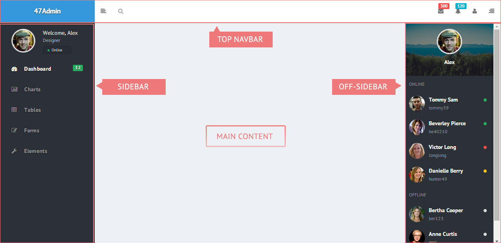

This template was developed to use Gulp as the main tool of the development workflow.
Gulp provides plugins to serve the app, perform automatic browser reloading after any change and build of assets for distribution. It also allows to work with agile languages like PUG/SCSS/etc and modular JavaScript (concatenated).
Beyond that, if you are not convinced about build tools, the current setup has a basic support to work with static files (html, css) without needing build tools.
We encourage you to use build tools, the benefits greatly outweigh the costs of learning.
Static files organization (no Gulp)
The most simple usage is by pointing the server root the 'app' folder of the package. Note that the index.html included in the root of the project is just a redirect to dashboard.html.
This allows to work directly with raw files like CSS, HTML and JS without worrying about build tools.
Now, to edit files, focus on the following locations:
- Styles are accessible in folder /app/css
- Markup is accessible in folder /app (raw html)
- Scripts are accessible in folder /app/js
Important if you change something on this folder and then switch to use Gulp, all previous changes may be lost because Gulp uses this folder as destination to place compiled files.
Compiled files organization
As a quick reference, the current setup does the following compilations:
| Language |
Produces |
| PUG |
HTML |
| SCSS |
CSS |
| Javascript |
Javascript (concatenation) |
Styles
For styles we use two files
sass/bootstrap.scss This files will be compile to bootstrap.css with the framework rules modified to match the template styles.
sass/app.scss This file contains template rules for different components and plugins. This file also @imports some files from Bootstrap like variables and mixin to easy the development.
Scripts
All scripts are concatenated into one single file app.js
The order of concatenation is the following:
app.init.js
modules/**/*.js
custom/**/*.js
Layout
One of the main benefits of using PUG is that we can use partials templates to write common parts of a page only once and reuse such template many times. This happens also for layout, similar to templates but allows to define 'blocks' where we will add later markup for a specific page.
The following picture describes the main pieces of the layout

The following markup representation is in fact divided into views but this code will give a good perspective of the final organization after the app is rendered:
doctype html
html(lang="en")
head
meta(charset='utf-8')
meta(name='viewport', content='width=device-width, initial-scale=1, maximum-scale=1')
meta(name='description', content='Bootstrap Admin App')
meta(name='keywords', content='app, responsive, jquery, bootstrap, dashboard, admin')
link(rel='icon' type='image/x-icon' href='favicon.ico')
title 47Admin - Bootstrap Admin Theme
// =============== VENDOR STYLES ===============
// FONT AWESOME
link(rel='stylesheet', href='vendor/@fortawesome/fontawesome-free/css/brands.css')
link(rel='stylesheet', href='vendor/@fortawesome/fontawesome-free/css/regular.css')
link(rel='stylesheet', href='vendor/@fortawesome/fontawesome-free/css/solid.css')
link(rel='stylesheet', href='vendor/@fortawesome/fontawesome-free/css/fontawesome.css')
// ANIMATE.CSS
link(rel='stylesheet', href='vendor/animate.css/animate.css')
// =============== PAGE VENDOR STYLES ===============
block vendor_css
//- This block includes page vendor
// =============== BOOTSTRAP STYLES ===============
link(rel='stylesheet', href='css/bootstrap.css', id="bscss")
// =============== APP STYLES ===============
link(rel='stylesheet', href='css/app.css', id="maincss")
body
.wrapper
// top navbar
header.topnavbar-wrapper
include views/_partials/_top-navbar
// sidebar
aside.aside-container
include views/_partials/_sidebar
// offsidebar
aside.offsidebar.d-none
include views/_partials/_offsidebar
// Main section
section.section-container
// Page content
.content-wrapper
block content
// =============== VENDOR SCRIPTS ===============
// STORAGE API
script(src='vendor/js-storage/js.storage.js')
// SCREENFULL
script(src='vendor/screenfull/dist/screenfull.js')
// i18next
script(src='vendor/i18next/i18next.js')
script(src='vendor/i18next-xhr-backend/i18nextXHRBackend.js')
//- JQUERY
script(src='vendor/jquery/dist/jquery.js')
//- BOOTSTRAP
script(src='vendor/popper.js/dist/umd/popper.js')
script(src='vendor/bootstrap/dist/js/bootstrap.js')
// =============== PAGE VENDOR SCRIPTS ===============
block vendor_js
//- This block includes page vendor
// =============== APP SCRIPTS ===============
script(src='js/app.js')
Behavior classes
As you can see in the index, there are some classes related to the sidebar that are used to change the layout behavior.
This classes are:
| Classname |
Description |
.aside-collapsed |
Makes the sidebar small showing only icons |
.aside-toggle |
used for mobiles to hide-show the sidebar |
.offsidebar-open |
used to toggle the offsidebar component (formally the right sidebar) |
The file *sidebar.json *contains the sidebar menu items configuration for easy customization. Using PUG you need only to edit this file in order to change the sidebar items
Vendor
Vendor script dependencies are managed by npm. Just run npm install in folder master/ and all dependencies will be installed.
Vendor folder
To avoid unnecessary files that comes with each package there’s a Gulp task that will copy all files required by the template from the node_modules folder to the app/vendor folder.
This files are listed in *vendor.json * which contains the paths of all files required.
Vendor Updates
To update vendor files via NPM you can edit the package.json file by adding the last version you want to download. Please note that each version of the template is developed and tested with the versions included, if you update plugins is not guaranteed they will work "out of the box".
Translation
The translation system uses i18next module
This modules simplifies the translation system by loading translate references from a JSON file and replacing the content where the reference has been used.
Examples
<small data-localize="dashboard.WELCOME"></small>
The JSON files with translation references are located in the folder app/i18n
See also dashboard.html to find example on how to change the language manually
Cards can perform different actions. Currently there are three actions triggered by clicking an icon in the panel heading. The example markup is like follows
.card.card-default
.card-header.d-flex
.card-title Card title
.ml-auto.text-muted-light
.d-inline-block.mr-3(data-perform="card-collapse")
em.fa.fa-minus
.d-inline-block.mr-0(data-perform="card-dismiss")
em.fa.fa-times
.d-inline-block.mr-0(data-perform="card-refresh" data-spinner="standard")
em.fas.fa-sync
.card-wrapper
.card-body
Note the importance of the data-attibutes, the .flexbox classes and the icon element.
Available actions are:
- Dismiss: With a click the card closes and remove itself.
- Collapse: this actions allows to collapse the panel body. This action uses extra classes that are handled via Javascript . See card-wrapperclass.
- Refresh: This action simply triggers an event in the .card element that can be hooked by any other module to know when the user request a refresh (content reload).
To see how work card tool events, please check the file master\js\modules\elements\cards.js
The spinner animation can be changed using the data-spinner attribute and the allowed values are the classes supported by the Whirl plugin used in the demo page.
"bar follow"
"bar"
"blade"
"double-up"
"duo"
"helicopter"
"line back-and-forth grow"
"line back-and-forth"
"line grow"
"line"
"ringed"
"shadow oval left"
"shadow oval"
"shadow oval right"
"shadow"
"sphere horizontal"
"sphere"
"sphere vertical"
"traditional"
Notifications
The notification system is based on the notify component from UIKIT.
There are two way to use it.
- Using a trigger element (via click) like a button , anchor, etc.
<button
type="button"
data-toggle="notify"
data-message="Message .."
class="btn btn-default"
>
Button text
</button>
data-toggle="notifiy" is what identifies the element to be handled by the notify plugin
data-message: the message you want to display. It accepts text or html.
data-options: This is a string of options in json format. Learn more here
- Or when the pages first loads
<div
data-toggle="notify"
data-onload data-message="..."
data-options="{"status":"danger", "pos":"top-right"}"
class="d-none"
></div>
Note the following
data-onload: When present, the alert box will be displayed automatically when page loads. No value required.
d-none: this class from bootstrap hides the element so its not displayed in the page.
Charts
Chart system is based on the plugin Flot Charts
According to the type of chart you want to display, you must provide a set of values so the chart can display it. This set of values are usually stored in a database or a file in the server.
Every time a page with a chart is loaded, the script flot-chart.js find the chart elements and request a content for that chart via AJAX POST, this script uses an object defined which does the ajax request, and after receive the data it inits the corresponding chart.
This is an example markup of a chart
<div
style="height: 250px;"
data-source="server/chart-data-donut.json"
class="chart-area flot-chart"
></div>
To load from a JSON file directly just put the URL to the json file in the data-source attribute like follows
Full Calendar
This item include the full calender plugin wrapped into a classic application to manage events. This app is intended to show how to work with the most common features that full calendar provides. You can find more on its website at http://arshaw.com/fullcalendar/docs/
The full calendar app is contained in the js module calendar.js and the execution is in 3 steps.
1- createDemoEvents() This function prepares the events data to be displayed when the calendar inits. You can wrap into this function a request to a source to get via ajax the stored events
2- initExternalEvents() attaches all necessary events to the left panel to add, remove and drag/drop events into the calendar
3- initCalendar() this function finally invokes the calendar plugin and displays the events loaded from the source. This function also contains the drop handler to know when an event has been dragged/droppped into the calendar.
At last, the ExternalEvent object is used to handle external events by adding draggable feature and the internal event data.
All functions above must run inside the document ready event to ensure a correct elements detection.
Custom code
To add your own code you can follow this instructions:
Working with css and js
- Create a file app/css/custom.css and add your own styles
- Create a file app/js/custom.js and add your own javascript
Edit the HTML files and include custom.css after all other css files and custom.js after all other js files.
Working with source files
For JS, go to folder master/js/custom and start editing the file custom.js. After compile the source again with Gulp, your own code will included at th bottom of file app/js/app.js.
For SCSS, go to folder master/scss and create a folder named custom and add your own files. Then edit file app.scss and @import all your stylesheets at the bottom (overrides all app default styles)
A note on updating The premise is, the less you change the downloaded code, the easier will be to apply any updates. Try always to keep your own code the most separated as possible from the package code to easily apply new updates when necessary.